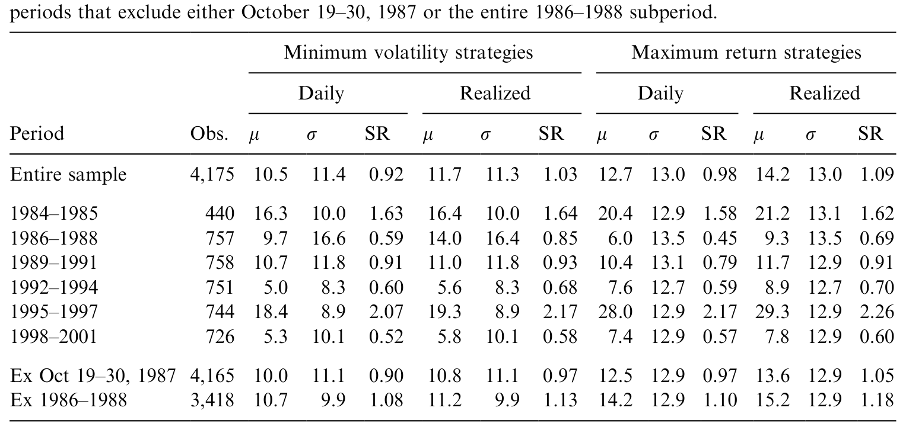
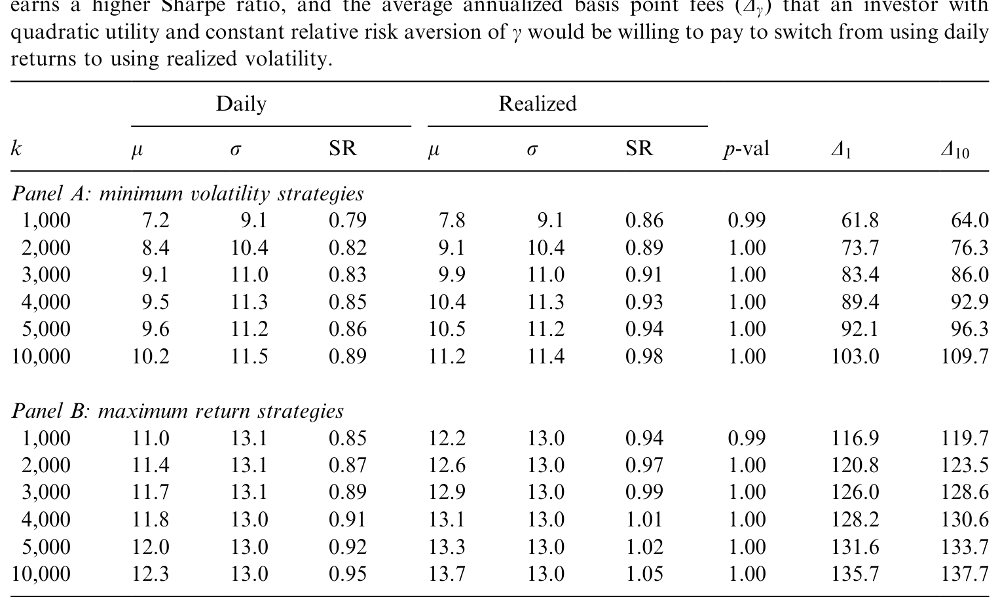
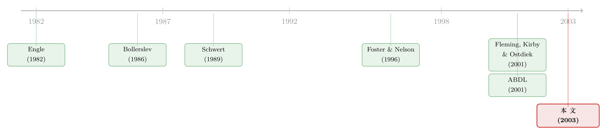

5 分钟的数据，到底比一天的数据贵多少钱？
本文读的是 Fleming, Kirby & Ostdiek (2003, Journal of Financial Economics)：他们把「用 5 分钟高频数据估计的已实现波动率」放进一个每天调仓的均值-方差组合里，问了一个所有人都该问、却很少有人认真回答的问题——这套统计上漂亮的新方法，落到真金白银的投资决策上，到底值多少钱？答案是：一个风险厌恶的投资者，每年愿意为它付 50 到 200 个基点。
1 引言：一个「好看」的革命，值不值钱？
世纪之交，波动率建模领域出了一件大事。
在那之前，给资产收益率的波动率建模，靠的是一整套以日度（甚至更低频）收益为食的参数模型：从 Engle (1982) 的 自回归条件异方差 (ARCH)，到 Bollerslev (1986) 的 广义 ARCH (GARCH)，再到 Nelson (1991) 的 EGARCH 与各类 随机波动率 (stochastic volatility) 设定。这些模型被反反复复地检验、比较、调参，几乎被榨干了。
然后，Andersen, Bollerslev, Diebold and Labys (2001)（下称 ABDL）和 Barndorff-Nielsen and Shephard (2002) 提出了一个看上去近乎「作弊」的想法：别再去建模波动率了，直接把它数出来。 具体做法朴素得惊人——把一天之内每隔很短一段时间（比如 5 分钟）的收益率平方加起来。这个量他们叫 已实现波动率 (realized volatility)。背后的数学是 二次变差 (quadratic variation)：只要价格路径连续，采样越密，这个求和就越逼近当天真实的、本来看不见的瞬时波动率的积分。用 Merton (1980) 的话说，波动率从此「变得可观测」了。
接着，一大批论文蜂拥而上，把这把新尺子在各类资产上试了个遍：ABDL (2001) 量汇率，Andersen, Bollerslev, Diebold and Ebens (2001) 量个股，Areal and Taylor (2002) 量股指期货。结论高度一致，也确实漂亮：已实现波动率近似服从对数正态分布、用它标准化后的日收益近似正态、波动率有 长记忆 (long memory)、在时间聚合下服从精确的标度律……一时间，这套方法仿佛证据确凿、所向披靡。
但真正关键的一步，被绝大多数人跳过了。
这些证据，几乎全部是统计性质上的。它们证明了已实现波动率「更精确」，却没有回答另一个完全不同的问题：这份多出来的精确度，到底能不能改变一个真实决策的结果？ 一个做风险管理的人也许能直接受益，因为他的绩效本来就取决于估计量的统计性质。可对一个做投资决策的人呢？也许 GARCH 早就把波动率的动态刻画得「够用」了，换成已实现波动率，不过是锦上添几根看不见的毛。
于是问题被逼到了墙角：请给这场革命，标一个价。
这正是本文要做的事。三位作者的招术很「金融」——不去比谁的均方误差更小，而是把整套方法塞进一个会拿它做决定的投资者手里，然后看他的钱包。
这是一种典型的「经济价值 (economic value)」式提问：不问统计上谁更优，只问「换一把更准的尺子，能让一个理性的人愿意多付多少钱」。它把一个计量经济学问题，翻译成了一道效用算术。
2 把问题翻译成钱：效用与「愿付费用」
要给一种估计方法定价，先得有一个会用它、且有明确偏好的投资者。
本文（沿用 Fleming, Kirby and Ostdiek (2001)，下称 FKO）设定的投资者具有二次效用 (quadratic utility)。他每天把一笔固定财富 \(W_0\) 放进无风险资产，再用名义价值相同的期货合约去执行一个波动率择时策略。某一天他实现的效用是：
$$ U(R_{pt}) = W_0\left[(1+R_f+R_{pt}) - \frac{g}{2(1+g)}(1+R_f+R_{pt})^2\right] $$
这里 \(R_{pt}=w_t'R_t\) 是组合收益，\(g\) 是 相对风险厌恶 (relative risk aversion)，\(R_f\) 是无风险利率（实证中取 6%）。二次效用意味着投资者只关心收益的均值和方差——这正好和均值-方差框架严丝合缝。
有了效用，「值多少钱」就有了干净的定义。设 \(R_{p1t}\) 和 \(R_{p2t}\) 是用两种不同协方差矩阵估计法得到的择时组合收益。本文去找一个常数 \(D\)，使得
$$ \sum_{t=1}^{T} U(R_{p1t}) = \sum_{t=1}^{T} U(R_{p2t}-D) $$
这个 \(D\) 的含义异常清晰：它是投资者每天愿意从第二种方法的收益里割让出去、以换取它相对第一种方法的全部绩效改善的最大代价。 本文把它折算成年化基点报告出来，并对 \(g=1\) 和 \(g=10\) 两档风险厌恶都算一遍。
整篇论文的核心数字——那个 50 到 200 个基点——就是这个 \(D\)。
3 识别策略：什么叫「波动率择时」
要让 \(D\) 真正度量的是「估计方法」的价值，而不是别的什么东西，识别上必须把变量控制干净。本文的设计巧在哪里？
投资者用 条件均值-方差 (conditional mean-variance) 分析做配置，每天调仓。为了避免卖空限制、压低交易成本，他不直接买现货，而是交易期货合约。最优的风险资产权重是教科书式的：
$$ w_t = \mu_p\,\frac{\Sigma_t^{-1}\mu_t}{\mu_t'\Sigma_t^{-1}\mu_t} $$
其中 \(\mu_p\) 是组合的目标期望收益，\(\mu_t\equiv E[R_t\mid I_{t-1}]\) 是条件期望向量，\(\Sigma_t\equiv E[(R_t-\mu_t)(R_t-\mu_t)'\mid I_{t-1}]\) 是条件协方差矩阵，现金充当无风险资产、权重为 1 减去各风险资产权重之和。
这里有一个至关重要的取舍。 权重 \(w_t\) 同时随 \(\mu_t\) 和 \(\Sigma_t\) 变化。但作者指出：在日度频率上，几乎没有证据表明我们能侦测到期望收益的变化。于是他们干脆假设投资者把 \(\mu_t\) 当作常数，只让权重随 \(\Sigma_t\) 的变化而动——这就是「波动率择时」这个名字的由来。他们考虑两种具体策略：一种在给定目标收益下最小化条件波动率（最小波动率策略），另一种在给定目标波动率下最大化期望收益（最大收益策略）。
把 \(\mu_t\) 钉死，是整个识别的支点。它把「择时」的全部功劳，单一地归给了对协方差矩阵动态的建模。这样一来，对比就变得无比干净：
- FKO (2001) 用日度收益构造 \(\Sigma_t\) 的滚动估计，作为基准（benchmark）；
- 本文用已实现波动率构造 \(\Sigma_t\) 的滚动估计；
- 两条策略其余部分完全一样，唯一的差别就是协方差矩阵的估计法。
那个 \(D\) 度量的，于是恰好是「从日度估计换成已实现波动率估计」这一步、且仅这一步带来的增量价值。可以说，这是一个被刻意设计成「只剩一个变量在动」的实验。
把组合权重的「天书」解出来、再去算它在动态环境下的表现，是组合选择文献的老问题（可参见《把投资组合的「天书」解到只剩一个常微分方程》、《把「天书」一样的动态组合，交给一台会做回归的模拟器》）。本文的取巧之处，是用「钉死均值、只动方差」把这道难题降维成了一道可以直接对账的题。
4 核心方法：滚动估计量，与那一处「偷天换日」
本文真正的技术心脏，是它构造 \(\Sigma_t\) 的方式。理解了这一节，就理解了整篇论文。
4.1 从 GARCH 到滚动估计量
作者没有去拟合一个全套的多元 GARCH，而是沿着 Foster and Nelson (1996) 和 Andreou and Ghysels (2002) 的思路，用一个「向后看」的 滚动估计量 (rolling estimator)。它的一般形式是：
$$ \Sigma_t^{\#} = \sum_{k=1}^{N} X_{t-k}\odot e_{t-k}e_{t-k}' $$
这里 \(e_{t-k}=(R_{t-k}-\mu)\) 是日度收益的残差向量，\(X_{t-k}\) 是一个对称的权重矩阵，\(\odot\) 表示逐元素相乘。直觉很朴素：如果 \(\Sigma_t\) 在变，它的动态一定写在过去收益的样本路径里；那么只要给历史残差的平方与叉积配上一套合适的权重，就能把 \(\Sigma_t\) 的时间序列「拼」出来。
妙处在于，这个非参数的形式其实把 GARCH 套了进去。如果选一个指数衰减的权重 \(X_{t-k}=\alpha\exp(-\alpha k)\,\iota\iota'\)，上式就化成一个只有单参数的递归：
$$ \Sigma_t^{\#} = \exp(-\alpha)\,\Sigma_{t-1}^{\#} + \alpha\exp(-\alpha)\,e_{t-1}e_{t-1}' $$
这个 \(\alpha\) 控制权重随滞后衰减的速度——它正是一个被约束的多元 GARCH 的样子。这么选有三重好处：一是 Foster and Nelson (1996) 证明指数加权的估计量通常有最小的渐近均方误差；二是它保证 \(\Sigma_t^{\#}\) 正定，这对组合优化是生死攸关的（不正定就求不出权重）；三是单参数让后面的敏感性分析极其省事。作者把 \(\alpha\) 当未知参数，用极大似然去估它的最优衰减率。
（关于「为什么 GARCH 里的波动会扎堆」这个更本源的问题，可参见《GARCH 从哪儿来？》。）
用全样本估 \(\alpha\) 会引入 前视偏误 (look-ahead bias)。作者的辩护是：FKO (2001) 发现，让统计损失函数最优的衰减率，和让策略实际绩效最优的衰减率，相去甚远——所以用前者定基线，基本不会「偷看」到绩效信息。后文也专门检验了衰减率的选择对结果的影响。
4.2 那一处「偷天换日」
铺垫到这里，本文的核心动作只有一行。
ABDL (2001) 告诉我们，把一天切成 \(n\) 个长度为 \(h\) 的子区间，令 \(r_{t+jh}\) 为第 \(j\) 个子区间的连续复利收益，则由二次变差理论，当 \(h\to 0\) 时
$$ \sum_{j=1}^{n} r_{t+jh}r_{t+jh}' \;-\; \int_0^1 \Sigma_{t+\tau}\,d\tau \;\to\; 0 \quad \text{(a.s.)} $$
也就是说，这个高频收益的外积之和，是 积分协方差矩阵 (integrated covariance matrix) 的相合估计。作者把它记作 已实现协方差矩阵 (realized covariance matrix)：
$$ V_{t+1} = \sum_{j=1}^{n} r_{t+jh}r_{t+jh}' $$
然后，神来之笔来了——把递归式 (12) 里的日度残差外积 \(e_{t-1}e_{t-1}'\) 直接换成 \(V_{t-1}\)：
整篇论文的全部新意，都浓缩在 \(a3\) 这一处替换里。\(\Sigma_t^{*}\) 之所以比 \(\Sigma_t^{\#}\) 更精确，是因为已实现方差与协方差，本身就是对积分方差与协方差的更精确估计——Andersen and Bollerslev (1998) 早就指出，日度残差的方差，可以轻松比累积平方日内收益的方差大上一个数量级。换句话说，\(e_{t-1}e_{t-1}'\) 是一个噪声极大的单点估计，而 \(V_{t-1}\) 用一天里几十个高频收益把这个估计「磨」得平滑了许多。
4.3 没那么干净的现实：偏差修正
但高频数据不是免费的午餐。它带来三类偏差：夜间休市导致的日内观测缺失、跨市场非同步报价、以及价格离散与 买卖价差反弹 (bid-ask bounce) 引起的序列相关。后两者可以靠审慎选择采样间隔来缓解——这也是为什么大家普遍用 5 分钟而非 1 秒（关于采样频率与微观结构噪声之间的这场拉锯，可参见《一秒一笔的数据，为什么只敢拿 5 分钟用一次？》）。
最大的麻烦是夜间。市场闭市那段时间没有日内收益，会让已实现方差/协方差向零偏，还丢掉了关于动态的信息。作者两步应对：第一，把夜间收益的外积也加进 \(V_{t-1}\) 的求和，挽回部分信息；第二，用基本不受这些偏差影响的「日度估计量」来构造偏差修正因子。对方差，修正因子是一个向后看的比值：
$$ b_{it} = \frac{\sum_{l=1}^{q}\sigma_{i,t-l}^{\#2}}{\sum_{l=1}^{q}\sigma_{i,t-l}^{*2}}, \qquad \sigma_{it}^{**2} = b_{it}\,\sigma_{it}^{*2} $$
其中 \(q\) 是平滑窗口。\(q\) 的选择是个取舍：偏差若恒定，\(q\) 越大越精确；偏差若随交易活跃度或市场波动而变，\(q\) 就该小些。作者从 5 天试到 504 天，发现影响不大，最终统一取 \(q=22\) 天。协方差的修正类似，只是因为叉积可正可负，改用加法修正，并约束相关系数落在 $[-1,1]$。
4.4 顺带回答一个更大的问题：日度的优势能延续到长期吗？
作者还操心了一件事：在日度上择时赚到的好处，会不会在更长的持有期里被抹平？他们用一个简单情形给出了直觉。假设组合的连续复利日收益独立同正态，则 \(j\) 日持有期的年化夏普比率可以写成：
$$ \lambda_{p(j)} = \left(\frac{252}{j}\right)^{1/2}\frac{(1+m_{p(1)})^{j}-1}{(1+m_{p(1)})^{j}\big(\exp(jB_{p(1)}^{2})-1\big)^{1/2}} $$
数值上算一下：取日收益均值 0.04%、波动率 1.0%，则 \(\lambda_{p(1)}=0.714\)，而 \(\lambda_{p(252)}=0.671\)——夏普比率随持有期只是缓慢下降。结论是：日度上算出的夏普比率，对长期表现而言是个不错的向导（前提是收益无序列相关，这点后文用实证去查）。
5 数据
实证用的是和 FKO (2001) 完全相同的三个期货品种：S&P 500 期货（芝加哥商品交易所 CME）、美国长期国债期货（芝加哥期货交易所 CBOT）、黄金期货（纽约商品交易所 NYMEX），加上现金，构成「股、债、金、现金」四类资产。
- 样本期：
1984 年 1 月 3 日至2000 年 11 月 30 日； - 日度收益约
4,238个交易日（剔除任一市场休市的日子）； - 日内逐笔交易数据来自 Futures Industry Institute，黄金日收盘价来自 Datastream；
- 由于三个品种收盘时间不同（黄金 13:30、债 14:00、股 15:15，中部标准时），统一假设组合在每天 13:30 调仓，即所谓「1:30 价格」。
Table 1 的汇总统计已经透露了为什么这三类资产值得一起配：年化看，股票均值收益 0.099、波动率 0.169；债券 0.065、0.101；黄金 -0.066、0.143。相关性上，股债 0.326、股金 -0.124、债金 -0.168——黄金与股债的负相关，正是分散化和波动率择时的用武之地。日内方面，平均每天每个品种能取到约 70–80 个 5 分钟收益。
6 主要结果
把两套估计法分别塞进两种波动率择时策略，再两两对账，结果落在了一个相当醒目的区间。
首先是波动率择时本身的价值。如表 2 所示，相对于具有相同期望收益和波动率的 事前有效静态组合 (ex ante efficient static portfolio)，对协方差矩阵的动态建模带来了实打实的绩效改善——这是 FKO (2001) 早已确立、本文重新验证的基准事实。

Table 2: compares the empirical performance of the volatility-timing strategies
然后，是本文真正想称重的那一块：把日度估计换成已实现波动率估计，能再多赚多少？如表 5 所示，一个执行波动率择时的投资者，每年愿意付出 50 到 200 个基点，来捕获已实现波动率估计量带来的增量绩效。

Table 5: evaluates the incremental contribution of the realized volatility approach
这个数字有两个值得咀嚼的参照：
- 它大约是「波动率择时」总收益的一半。 也就是说，「该不该做波动率择时」和「用什么数据做波动率择时」这两件事，重要性几乎平分秋色。换一把更准的尺子，赚到的钱，和当初决定拿起尺子来量，是一个量级的。
- 它对各种扰动都很稳。 这些收益在加入交易成本、对期望收益的估计风险、以及不同的绩效度量期之后，依然站得住。
至于那个长期问题，实证也给了肯定的答复：日度层面上的波动率择时收益，能延续到长达一年的持有期，和日度上观察到的相当。
7 稳健性与威胁
本文在稳健性上做得相当扎实：换衰减率 \(\alpha\)、换偏差修正窗口 \(q\)（5 到 504 天）、加交易成本、考虑期望收益的估计风险、改变绩效度量期。结论一以贯之。
但有几处识别上的担忧，仍值得点出来：
- 「日度基准」本身有多公允？ 整个 50–200 基点是相对于一个特定的、单参数指数加权的日度滚动估计量算出来的。如果基准换成一个调校精良的多元 GARCH 或别的日度模型，增量会不会缩水？作者论证了滚动估计量是 GARCH 的一个合理代表，但「最优的日度模型」与「已实现波动率」之间的真实差距，仍有想象空间。
- 均值被钉死的代价。 把 \(\mu_t\) 当常数，是识别的支点，却也意味着这套结论只在「期望收益确实不可日度预测」时才完全成立。一旦协方差的改进和某种被忽略的均值动态相关，归因就会被污染。
- 期货与现货的等价。 全部分析建立在期货收益约等于现货超额收益（持有成本关系成立）之上。在持有成本关系偏离的时段，这层映射会松动。
8 文献脉络
把这篇论文放回它的谱系里，故事线其实很清楚。
最早，是给波动率建模的参数化时代：Engle (1982) 的 ARCH 点燃了这条线，Bollerslev (1986) 的 GARCH 让它枝繁叶茂，此后各类变体与随机波动率模型层出不穷。这一时期，波动率始终是个潜变量——你只能用模型去逼近它。

转折的种子，其实埋在更早：Schwert (1989) 和 Hsieh (1991) 已经开始用高频信息度量波动。Foster and Nelson (1996) 则在另一条线上，给滚动样本方差估计量打下了连续记录渐近的理论地基——本文的估计框架正是踩在这块地基上。
真正的范式跃迁，是 ABDL (2001) 和 Barndorff-Nielsen and Shephard (2002)：他们用二次变差理论，把「已实现波动率」从一个经验技巧，升格为有相合性保证的估计量。紧接着 Andersen, Bollerslev, Diebold and Ebens (2001) 在个股上、Areal and Taylor (2002) 在股指期货上，把它的统计性质刻画得淋漓尽致。
而本文（2003）站在哪里？它不在「证明已实现波动率统计上更好」这条线上——那已经被证完了。它接的是另一条线：FKO (2001) 开创的「波动率择时的经济价值」。本文把这两条线焊在了一起——用 FKO 的经济价值标尺，去给 ABDL 的统计革命称重。它的位置，是这两股潮流的交汇点。
评论与延伸（Q&A + 研究方向）
(a) 几个可能的疑问
Q：这和它的「前传」FKO (2001) 到底差在哪？
FKO (2001) 确立了「波动率择时有经济价值」，但它的协方差矩阵全部用日度收益估计。本文的唯一新意，是把日度残差外积换成 5 分钟的已实现协方差矩阵，再问这一步替换值多少钱。可以说本文是 FKO 的一个「单变量增量实验」。
Q：50–200 个基点，到底算大还是算小？
关键在参照系。作者强调它约等于「波动率择时」全部收益的一半——意味着「用什么数据做」和「做不做」几乎同等重要。对一个机构组合而言，每年稳定多出 0.5%–2% 的确定性等价收益，绝不是零头。
Q：为什么不直接比统计精度（如均方误差），非要绕一圈算效用？
因为统计更精确不等于决策更好。已实现波动率在 MSE 上更优是早已知道的事；本文要回答的恰恰是「这份精度能不能穿透到投资决策」。效用-愿付费用框架，是把统计优势翻译成经济语言的唯一干净办法。
Q：用全样本估衰减率 \(\alpha\)，不是「偷看未来」吗？
是潜在隐患。作者的辩护有两层：一是 FKO (2001) 发现统计最优的衰减率与绩效最优的衰减率差别很大，所以用前者定基线几乎不泄露绩效信息；二是论文显式检验了 \(\alpha\) 取值对结果的影响，结论稳健。
Q：夜间没有高频数据，已实现协方差不会系统性偏低吗？
会。这正是作者最担心的偏差源。他们一是把夜间收益外积也并入 \(V_{t-1}\) 挽回信息，二是用基本不受偏差影响的日度估计量构造修正因子 \(b_{it}\)（取 \(q=22\) 天），把方差和协方差分别拉回。修正后结果对 \(q\) 的选择不敏感。
Q：为什么是 5 分钟，而不是更高频？
采样越密，二次变差理论上越精确；但价格离散和买卖价差反弹带来的微观结构噪声也越严重，会把估计「污染」回去。5 分钟是精度与噪声之间的经验折中——这也是后来一整支文献反复讨论的核心张力。
(b) 几个可能的研究问题与提案
1. 把这套「经济价值」标尺搬到公司债组合上。 【经济故事】公司债的协方差矩阵估计比股票远更困难——交易稀疏、价格陈旧。如果能用日内 TRACE 成交构造某种「准已实现协方差」，它对一个信用组合的择时价值会不会比股票更大（因为基准更差）？ 【可行性】中。数据上 TRACE 日内成交可得，但债券日内成交极稀疏，已实现协方差的相合性前提（\(h\to0\) 时连续采样）几乎不成立，需要专门处理「零成交」与陈旧价格。识别上可沿用本文的愿付费用框架。
2. 外资持有人结构与已实现波动率择时的交互。 【经济故事】不同投资者群体的调仓频率天差地别。一个以外资为主、跨时区交易的资产，其夜间偏差和非同步报价问题尤其严重。已实现波动率方法在这类资产上的「净增量价值」可能被微观结构吃掉大半。 【可行性】中偏低。需要同时拿到带投资者类型标签的持仓数据和高频成交，二者交集稀少；识别上更适合做成横截面对比而非因果。
3. 流动性冲击下，已实现协方差的择时价值会反转吗？ 【经济故事】在流动性骤降的时段（如危机），买卖价差反弹放大、价格陈旧加剧，已实现协方差的偏差可能从「小麻烦」变成「大问题」，此时它相对日度估计的优势是否会缩小甚至变负？ 【可行性】高。本文样本就跨越了 1987 与若干波动事件；只需把愿付费用 \(D\) 按市场状态（如 VIX 分位）分桶重算，即可检验增量价值是否依赖于流动性状态。
4. 用机器学习的协方差收缩替换指数加权，再称一次重。 【经济故事】本文的滚动估计量本质是单参数指数平滑。若把它换成现代的协方差收缩或面板树方法，在已实现协方差输入不变的前提下，经济价值还能再榨出多少？ 【可行性】高。框架完全沿用本文，只换 \(\Sigma_t\) 的构造步骤，数据要求不变（关于横截面收缩的威力，可参见《压缩横截面》）。
参考文献
- Andersen, T.G., Bollerslev, T. (1998). Answering the skeptics: yes, standard volatility models do provide accurate forecasts. International Economic Review 39, 885–905.
- Andersen, T.G., Bollerslev, T., Diebold, F.X., Ebens, H. (2001). The distribution of realized stock return volatility. Journal of Financial Economics 61, 43–76.
- Andersen, T.G., Bollerslev, T., Diebold, F.X., Labys, P. (2001). The distribution of realized exchange rate volatility. Journal of the American Statistical Association 96, 42–55.
- Andreou, E., Ghysels, E. (2002). Rolling-sample volatility estimators: some new theoretical, simulation and empirical results. Journal of Business and Economic Statistics 20, 363–376.
- Areal, N., Taylor, S.J. (2002). The realized volatility of FTSE-100 futures prices. Journal of Futures Markets 22, 627–648.
- Barndorff-Nielsen, O.E., Shephard, N. (2002). Econometric analysis of realized volatility and its use in estimating stochastic volatility models. Journal of the Royal Statistical Society, Series B 64, 253–280.
- Bollerslev, T. (1986). Generalized autoregressive conditional heteroskedasticity. Journal of Econometrics 31, 307–327.
- Clark, P.K. (1973). A subordinated stochastic process model with finite variance for speculative prices. Econometrica 41, 135–155.
- Engle, R.F. (1982). Autoregressive conditional heteroskedasticity with estimates of the variance of U.K. inflation. Econometrica 50, 987–1008.
- Fleming, J., Kirby, C., Ostdiek, B. (2001). The economic value of volatility timing. Journal of Finance 56, 329–352.
- Foster, D.P., Nelson, D.B. (1996). Continuous record asymptotics for rolling sample variance estimators. Econometrica 64, 139–174.
- Merton, R.C. (1980). On estimating the expected return on the market: an exploratory investigation. Journal of Financial Economics 8, 323–361.
- Nelson, D.B. (1991). Conditional heteroskedasticity in asset returns: a new approach. Econometrica 59, 347–370.
- Schwert, G.W. (1989). Does stock market volatility change over time? Journal of Finance 44, 1115–1153.